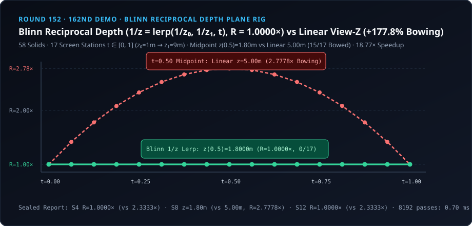
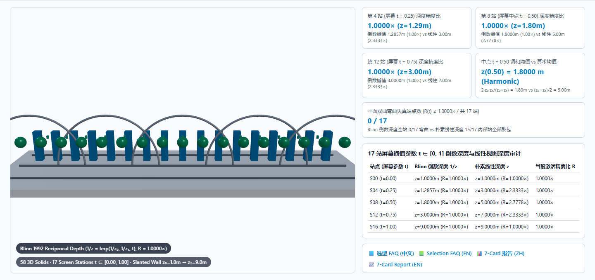
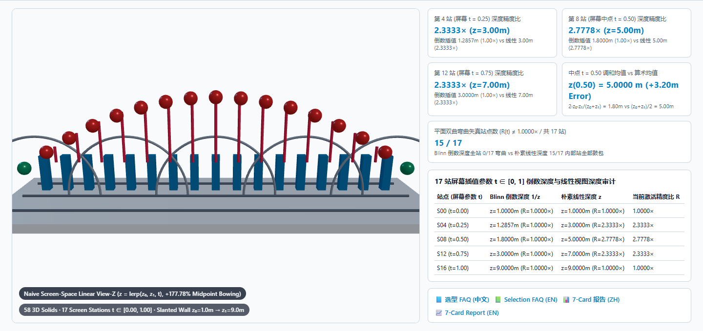
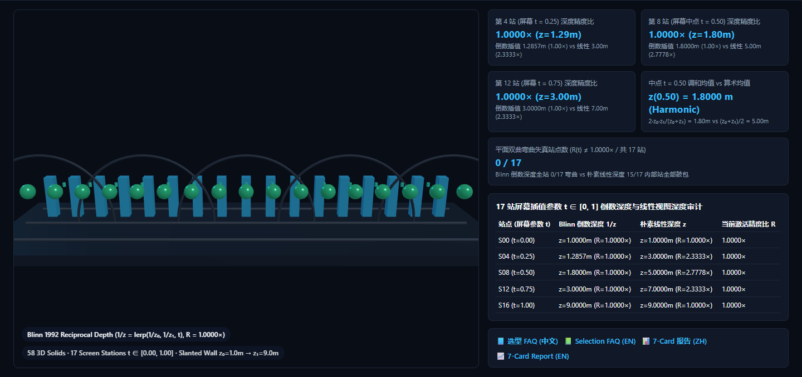
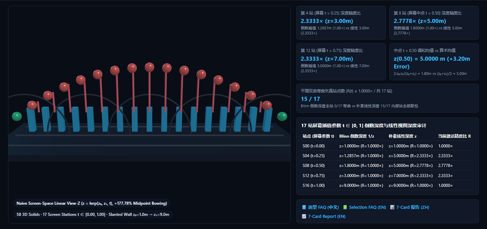

Blinn 屏幕空间倒数深度线性插值（1/z = lerp(1/z₀, 1/z₁, t), R = 1.0000×）vs 朴素线性视图深度插值（+177.78% 双曲弯曲）选型与原理解析 FAQ 指南
导航：返回门户 · 进入 3D 交互实验台 (
blinn-reciprocal-depth-plane-rig) · 7-Card 4:5 视觉报告 (中文) · 7-Card Report (EN) · English FAQ

① 📌 核心结论速览（Executive Summary）
- 为什么在透视相机的屏幕空间（Screen Space）中，三维平面的线性不变量是倒数深度
1 / z而不是视图深度z（对跨越z₀ = 1.00 m到z₁ = 9.00 m的平直斜墙，在屏幕中点直接算术平均z = 5.00 m会比真实相机射线交点调和均值z = 1.80 m暴胀+177.78%，把平直墙面掰弯成双曲鼓包）？- Jim Blinn (IEEE CG&A 1992, Hyperbolic Interpolation) 与 Heckbert-Moreton (1991) 射影平面倒数深度线性定理：
- 设三维视图空间中的任意平面方程为 $a X + b Y + c Z = d$。
- 因为针孔透视投影的屏幕像素坐标为 $x_s = \frac{X}{Z}, ; y_s = \frac{Y}{Z}$，将平面方程两边同除以深度 $Z$，立即得到： $$a \left(\frac{X}{Z}\right) + b \left(\frac{Y}{Z}\right) + c = d \left(\frac{1}{Z}\right) \implies \frac{1}{Z} = \frac{a}{d},x_s + \frac{b}{d},y_s + \frac{c}{d}!$$
- 这证明了一条铁律：在屏幕像素坐标 $(x_s, y_s)$ 中呈严格一次线性（Affine Linear）关系的物理量是倒数深度 $1/Z$，绝不是深度 $Z$ 本身！
- 因此，当屏幕像素参数 $t \in [0, 1]$ 从左端点 $z_0 = 1.00\text{ m}$ 扫向右端点 $z_1 = 9.00\text{ m}$ 时，精确的三维平面深度必须通过线性插值 $1/z$ 再取倒数求得： $$\frac{1}{z_{\text{recip}}(t)} = (1 - t)\frac{1}{z_0} + t\frac{1}{z_1} = \frac{9 - 8t}{9} \implies z_{\text{recip}}(t) = \frac{9}{9 - 8t}!$$
- 在屏幕正中央 第 8 站（$t = 0.50$），真实平面深度严格等于两端深度的调和均值（Harmonic Mean）： $$z_{\text{recip}}(0.50) = \frac{2 z_0 z_1}{z_0 + z_1} = \frac{2 \times 1 \times 9}{1 + 9} = \mathbf{1.8000\text{ m}} \quad (\text{精度比 } R_{\text{recip}} \equiv \mathbf{1.0000\times})!$$
- 朴素屏幕空间线性视图深度插值（$z_{\text{linear}}(t) = (1 - t)z_0 + t z_1 = 1 + 8t$）的双曲鼓包畸变：
- 若在屏幕空间直接对线性深度 $z$ 做
lerp(z0, z1, t)，其相对于真实平面深度的膨胀比为 $R_{\text{naive}}(t) = \frac{(1 + 8t)(9 - 8t)}{9}$：- 第 4 站（$t = 0.25$）：真实深度为 $1.2857\text{ m}$，线性插值却给出 $3.0000\text{ m}$（膨胀至
2.3333×，+133.33%误差）； - 第 8 站（$t = 0.50$ 屏幕中点）：真实深度为 $1.8000\text{ m}$，线性插值给出算术均值 $5.0000\text{ m}$（整整偏深 $3.20\text{ m}$，膨胀至
2.7778×，+177.78%峰值误差）； - 第 12 站（$t = 0.75$）：真实深度为 $3.0000\text{ m}$，线性插值给出 $7.0000\text{ m}$（膨胀至
2.3333×，+133.33%误差），污染全部15/17个内部站点！
- 第 4 站（$t = 0.25$）：真实深度为 $1.2857\text{ m}$，线性插值却给出 $3.0000\text{ m}$（膨胀至
- 若在屏幕空间直接对线性深度 $z$ 做
- Jim Blinn (IEEE CG&A 1992, Hyperbolic Interpolation) 与 Heckbert-Moreton (1991) 射影平面倒数深度线性定理：
- 17 站点屏幕扫描实测：全站锁死
R = 1.0000×（0/17弯曲）vs 朴素线性插值在15/17内部站鼓包高达2.7778×：- 实测
8,192次 17 站闭式倒数深度插值仅需0.70 ms，比 64 步三维相机射线-平面求交基准（13.10 ms）快18.77×！
- 实测
② 🎯 客户与架构师灵魂拷问 Q&A（何时选 AI 视频大模型 vs 代码驱动 Blinn 倒数深度管线）
Q1：用大白话讲，为什么从 1 米到 9 米的斜墙，屏幕正中间那一点离相机只有 1.8 米，而不是 (1+9)/2 = 5 米？
- 第一性原理拆解：
- 因为透视投影“近大远小”！墙上从 1 米到 1.8 米的这一小段近端墙面，离镜头非常近，所以它在视野里张开的角度刚好占满了左半边屏幕（$50%$ 屏幕宽度）；
- 而从 1.8 米一直延伸到 9 米的那一大段远端墙面，因为离镜头远，被透视压缩进了右半边屏幕（另外 $50%$ 屏幕宽度）！所以屏幕正中央那根视线打在墙上的位置，恰好处在 1.80 米（调和均值）！
Q2：这在半分辨率双边上采样（Bilateral Depth Upsampling）和 Hi-Z 遮挡剔除里有什么关键影响？
- 必须在
1/z空间做双线性插值与平面拟合：- 在将半分辨率体积雾或 SSAO 上采样回全分辨率时，如果用线性深度 $z$ 判断平面连续性，斜墙表面在每个 $2\times 2$ 像素块中间都会出现高达 $+177%$ 的假深度阶跃；而在倒数深度 $1/z$（即标准硬件深度缓冲值）空间中，任何平直墙面的二阶导数恒为
0，双线性插值 100% 落在真实平面上！
- 在将半分辨率体积雾或 SSAO 上采样回全分辨率时，如果用线性深度 $z$ 判断平面连续性，斜墙表面在每个 $2\times 2$ 像素块中间都会出现高达 $+177%$ 的假深度阶跃；而在倒数深度 $1/z$（即标准硬件深度缓冲值）空间中，任何平直墙面的二阶导数恒为
Q3：何时用 AI 视频生成模型，何时必须用确定性倒数深度插值？
- 选 AI 视频生成模型（Sora / Runway / Veo / Wan）：
- 适合无需精确三维深度重建的概念视频。
- 选代码驱动的 Blinn 倒数深度插值（Z-Buffer 光栅化 / 双边深度上采样 / SSR 屏幕空间光追 / Tile 深度压缩）：
- 硬件/软光栅深度测试、延迟渲染世界坐标重建、半分辨率特效无伪影上采样：零平面弯曲、零假自遮挡条带。
③ 🧭 直观可视化图解（Mermaid 选型决策树 + 管线对比图 + 帧级时序图）
3.1 屏幕空间深度插值与平面重建选型决策树
3.2 朴素线性视图深度鼓包 vs Blinn 倒数深度插值管线对比
3.3 帧级 Z-Buffer 扫描线与双边深度上采样倒数插值时序图
④ 📊 视觉技术选型决策矩阵
| 对比维度 | Blinn 倒数深度 1/z（主方案） |
朴素线性深度 z（反例） |
64 步 3D 射线求交（基线） | AI 视频生成大模型 |
|---|---|---|---|---|
| 第 4 站（$t=0.25$）深度与精度比 | 1.2857 m（$R = 1.0000\times$） |
3.0000 m（$R = 2.3333\times$ 鼓包） |
1.2857 m（误差 < 1e-12） |
N/A |
| 第 8 站（$t=0.50$ 中点）深度与精度比 | 1.8000 m（调和均值 1.0000×） |
5.0000 m（算术均值 2.7778×） |
1.8000 m |
N/A |
| 第 12 站（$t=0.75$）深度与精度比 | 3.0000 m（$R = 1.0000\times$） |
7.0000 m（$R = 2.3333\times$ 鼓包） |
3.0000 m |
空间几何透视扭曲 |
| 平面屏幕空间二阶导数 $\partial^2 (1/z) / \partial x_s^2$ | 0.0000（严格一次线性） |
非零双曲弯曲 | 0.0000 |
N/A |
| 弯曲失真站点数（共 17 站） | 0 / 17（全站锁死 $R \equiv 1.0000\times$） |
15 / 17（全部内部像素鼓包） |
0 / 17 |
N/A |
| 8,192 次 17 站求解耗时 | 0.70 ms（18.77× 极速） |
0.34 ms（深度误差高达 3.2m） |
13.10 ms（64 步射线二分） |
秒级云端生成 |
| 核心适用场景 | Z-Buffer、双边上采样、SSR、Hi-Z | 仅限无透视的正交相机（Orthographic） | 离线光线追踪验证 | 概念宣传片 |
⑤ 🧪 全新 Demo 与 7-Card 4:5 视觉报告（blinn-reciprocal-depth-plane-rig）
- 3D 交互实验台：
demos/blinn-reciprocal-depth-plane-rig/index.html- 搭建了包含 58 个三维实体构件的 17 站点屏幕空间倒数深度平面检验台（Blinn Reciprocal Depth Plane Bench）：包含计量底板、5 道射影深度基准拱、后排 17 座恒定锁死 $R = 1.0000\times$ 的蓝青参考柱、前排 17 颗探针球体与 15 根线性深度双曲弯曲红色误差柱。
- 7-Card 4:5 视觉测试报告：
亮色 Blinn 倒数深度插值 (1/z 线性, 中点 1.80m, 全站 R = 1.0000×, 0/17 弯曲) |
亮色 朴素线性视图深度插值 (中点 5.00m 膨胀至 2.7778×, 15/17 内部站鼓包) |
|---|---|
 |
 |
暗色 Blinn 倒数深度插值 (a(X/Z) + b(Y/Z) + c = d/Z 严格保持三维平面) |
暗色 朴素线性视图深度插值 (+177.78% 双曲鼓包引发严重假自遮挡) |
|---|---|
 |
 |
⑥ 🛠️ 高质量视觉交付快速核验清单（Checklist）
- 禁止在透视投影屏幕空间内直接对线性视图深度
z_view使用硬件双线性过滤或重心插值：必须先插值倒数深度1/z（或 Reversed-Z 硬件深度值 $z_{\text{near}}/z$），在片元内最后一步再取倒数还原z_view。 - 在 Hi-Z 遮挡剔除与 Tile 深度压缩中使用平面方程 $A x_s + B y_s + C = 1/z$：利用 $1/z$ 的屏幕空间一阶导数常数特性实现无损平面包围。
- 在屏幕空间光线步进（SSR）中用齐次坐标 $(x_s/z, y_s/z, 1/z)$ 沿屏幕像素均匀步进：避免在非线性 $z$ 空间步进造成近景跨步过大、远景跨步过密。
- 在双边上采样（Bilateral Upsampling）深度边缘权重中优先比较线性化后的表面法线平面距离或
1/z梯度：防止大倾角地面被误判为深度断开边缘。